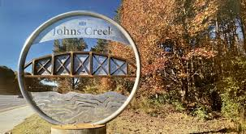

Background
Johns Creek, Georgia is not a city that usually shows up in travel guides or “top 10 places to visit” lists. It is a suburban town outside Atlanta, known more for good schools, parks, and family neighborhoods than for nightlife or tourist attractions. For people who grow up there, Johns Creek is defined by routine. Soccer fields, strip malls, community centers, and long drives. It is a place you live, not a place you visit.
Because of that, I was curious how an LLM would interpret a town like Johns Creek. LLMs tend to do well with major cities, famous landmarks, and places that generate lots of online content. Johns Creek is quieter. Its culture is local, repetitive, and not especially visible on the internet.
So I wanted to test how an LLM finds and evaluates activities in a place that is familiar to its residents but relatively invisible to outsiders. Would it capture the reality of the town, or would it flatten it into generic suburban recommendations?
Setup
I used Gemini 2.5 Flash and asked it a series of prompts about things to do in Johns Creek, GA. I did not provide any personal context or corrections. I wanted to see what the model would surface on its own.
The prompts focused on:
- General activities
- Cultural or community experiences
- How the town is “rated” as a place to spend time
Each prompt was run independently.
Prompt 1
“What are some things to do in Johns Creek, Georgia?”
Result
Gemini listed parks, outdoor recreation, and family-friendly activities. It mentioned walking trails, green spaces, local parks, and community events. It also referenced nearby dining options and shopping areas.
This response was accurate in a general sense. Johns Creek does have many parks and is designed around outdoor family life. However, the answer felt interchangeable with dozens of other suburban towns.
Nothing about it felt specific.
Prompt 2
“What cultural activities are available in Johns Creek, GA?”
Result
Gemini responded with references to community events, local festivals, and access to nearby cultural hubs in the Atlanta area. It mentioned libraries, community centers, and occasional performances.
What stood out was that Gemini framed Johns Creek’s culture largely in relation to Atlanta. The town itself was described as having limited cultural offerings, with real “culture” existing elsewhere.
This reflects a broader pattern in how LLMs treat suburbs. Culture is assumed to live in cities. Suburbs are treated as extensions rather than as places with their own rhythms.
Prompt 3
“How would you rate Johns Creek as a place to live or spend time?”
Result
Gemini described Johns Creek as a safe, family-oriented, and high-quality suburban town. It emphasized good schools, safety, and livability. It framed the town as ideal for families and people seeking a quiet environment.
This rating was positive but narrow. Johns Creek was evaluated almost entirely through institutional metrics. Education. Safety. Cleanliness. It was not evaluated through lived experience.
Analysis
Gemini’s responses reveal how LLMs conceptualize places that are not heavily documented as cultural destinations.
What Gemini Captures Well
Structural features
It accurately identifies parks, schools, and general amenities.Reputation metrics
It understands how Johns Creek is discussed online, especially in rankings and real estate contexts.Family-oriented framing
This matches how the town is often marketed and described externally.
What Gemini Misses
Everyday social life
There is no mention of how teenagers experience the town, how young adults feel growing up there, or how boredom and routine shape daily life.Cultural specificity
Johns Creek has a large immigrant population, especially Asian and South Asian families. This cultural texture is absent.Emotional reality
The experience of living in a suburb is not just safety and parks. It includes isolation, dependence on cars, and limited public gathering spaces.Local nuance
Strip malls, tutoring centers, soccer practices, and weekend errands define the town more than “activities.”
Gemini describes Johns Creek as a place that works well on paper. It does not describe it as a place that feels a certain way.
Why This Happens
LLMs rely on text visibility. Cities like New York or Los Angeles generate massive amounts of content about things to do, hidden gems, nightlife, and culture. Suburbs generate content about rankings, schools, and property values.
As a result, LLMs learn to describe suburbs through metrics rather than experiences. They inherit the language people use to market these places, not the language residents use to talk about them.
This leads to a flattening effect. Many suburbs start to sound identical.
Cultural Implications
As LLMs become tools for recommendation and exploration, this matters. If AI systems consistently frame suburbs as culturally empty but structurally successful, they reinforce the idea that meaningful experiences only happen in cities.
This framing ignores the ways people actually build lives in these places. Friendships, routines, cultural enclaves, and community networks exist even if they are not highly documented.
Johns Creek is not exciting in the way a city is exciting. But it is not empty either. It is dense with everyday life, which LLMs struggle to capture.
Takeaways
Gemini can find activities in Johns Creek, but it finds them through a generic suburban lens. It emphasizes safety, parks, and livability while missing cultural texture and lived experience.
This shows that LLMs are better at describing places that are visible and narrativized online than places that are quietly lived in. When asked to evaluate a hometown, they produce something that feels technically correct but emotionally distant.
Understanding this limitation helps us read AI-generated recommendations more critically. Sometimes what is missing is more important than what is listed.
Home is more than a list,
Mallika